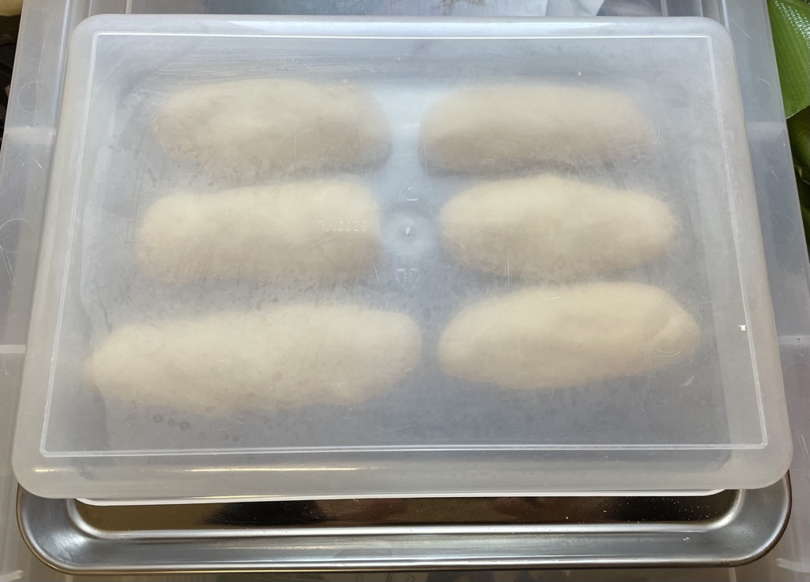
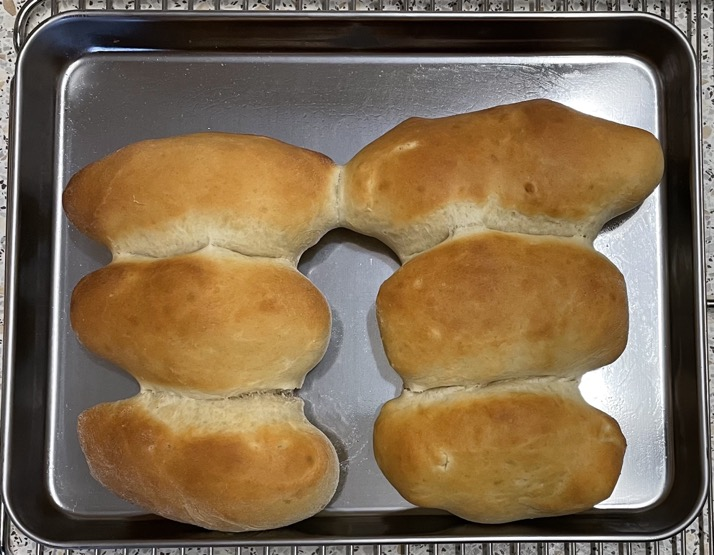

Iced buns
Yeast
- Mix to start yeast
- 80ml (82g) milk warmed
- 25ml water warmed
- 7g yeast sachet
Dough
- Mix in stand mixer with dough hook
- 250g strong bread flour
- 20g caster sugar
- ½ tsp salt
- Mix in to form dough
- yeast milk mixture
- 20g unsalted butter softened
- 1 large egg beaten
- Slowly add in 25ml more water to form sticky dough
- Mix on high for 8 mins until smooth and elastic
- Place dough in oiled bowl and leave to prove for 45 mins until doubled in size
Buns
- Knock back dough on floured surface
- Knead for 2 mins until smooth
- Divide into 6 or 8
- Roll each piece into sausage 5" long, folds will correct themselves
- Place on oiled baking tray leaving space so they will just touch each other when risen
- Cover and leave to rise for 30 mins
Baking
- Preheat oven to 190°C
- Bake 10 mins until golden brown
- Leave to cool
Icing
- Mix
- 80g icing sugar
- 1 tsp water as required
- zest of ½ lemon ground up
- Smooth over buns
- Decorate with sugar sprinkles if required
Notes
- Need alternative icing, just sugar and water does not stay on bun
- Use lemon zest for flavour not juice
- Original recipe
Pics
16 Feb 2023


30 Apr 2023